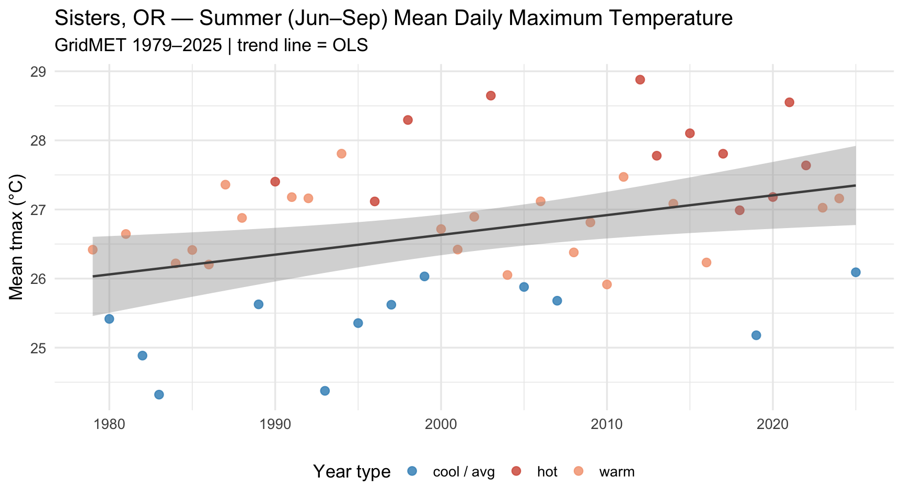
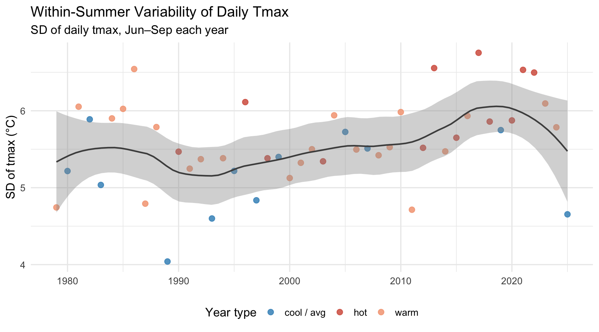
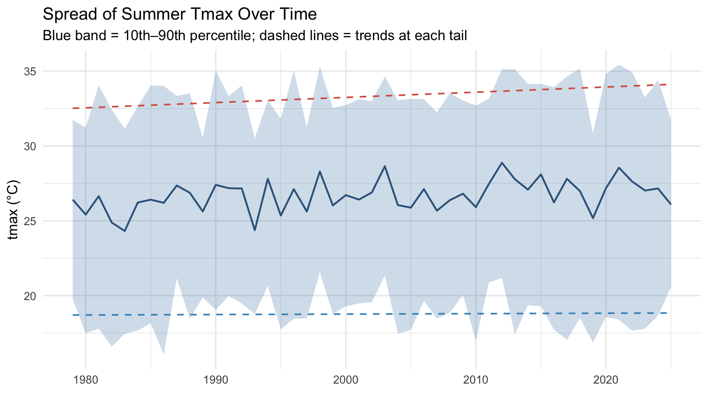
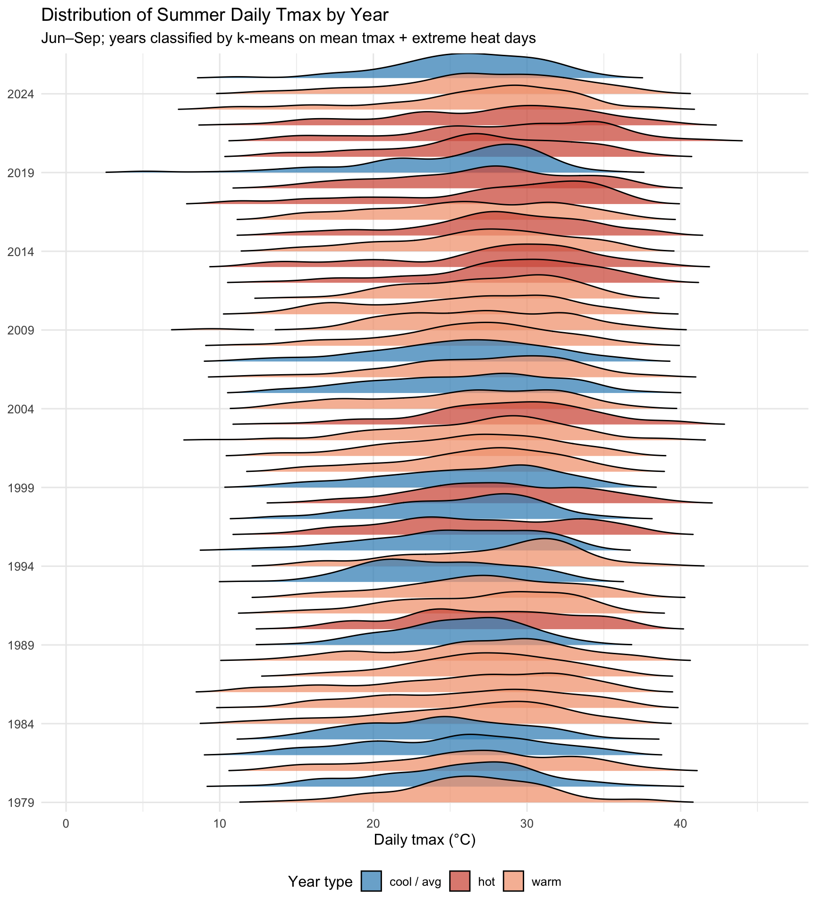
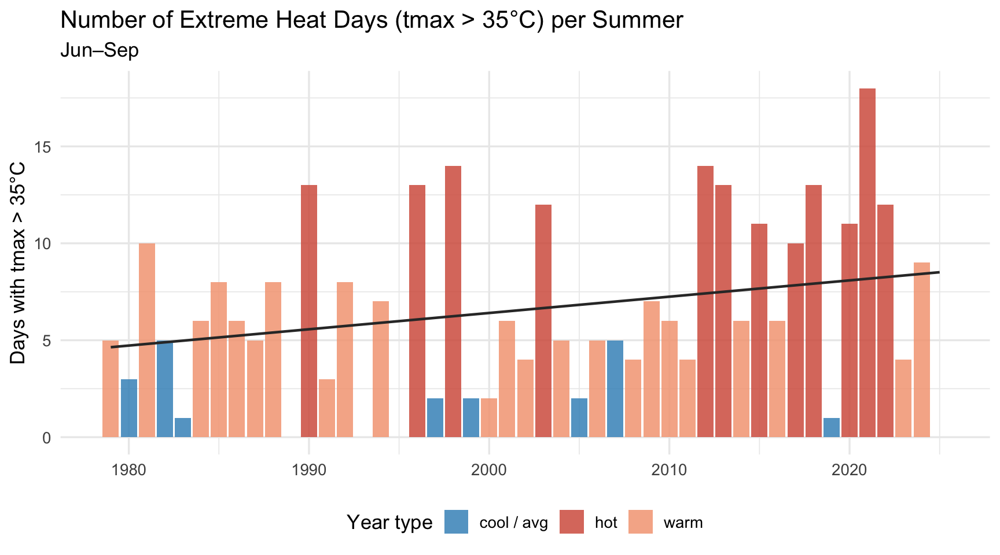
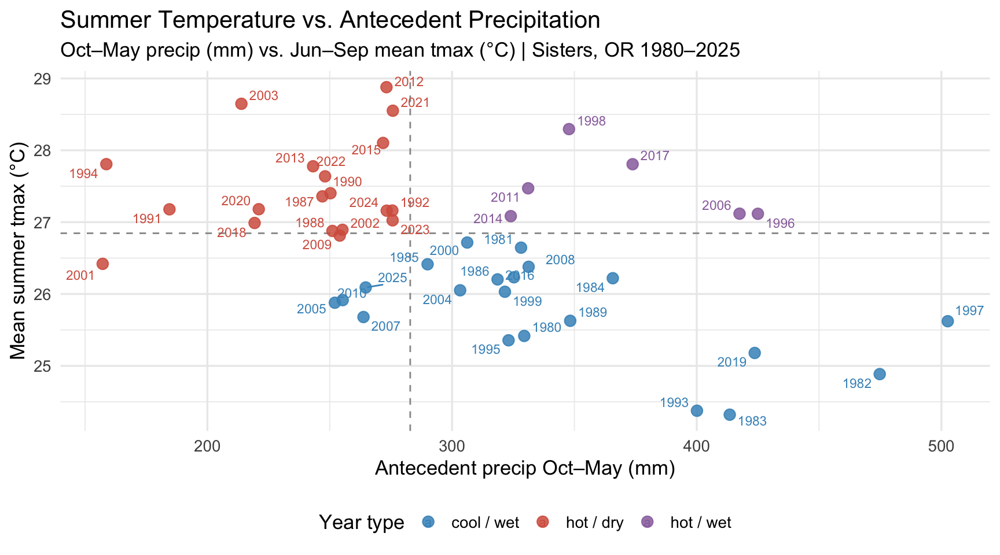
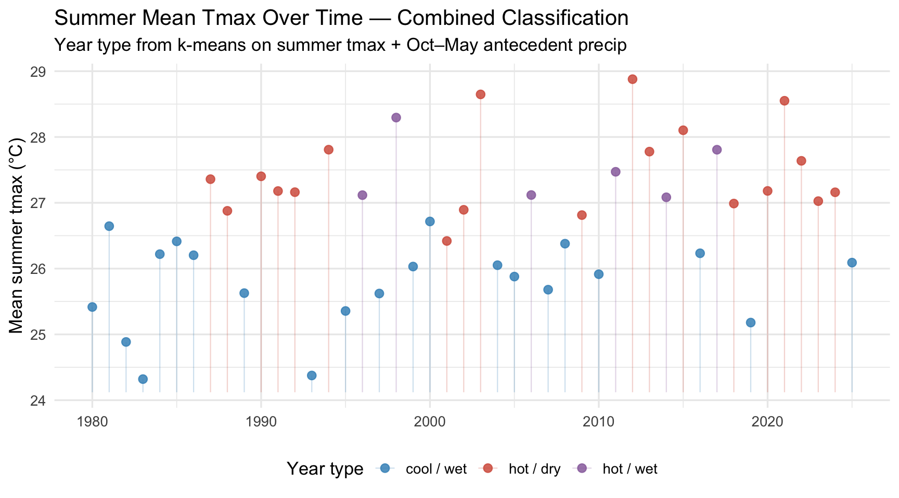
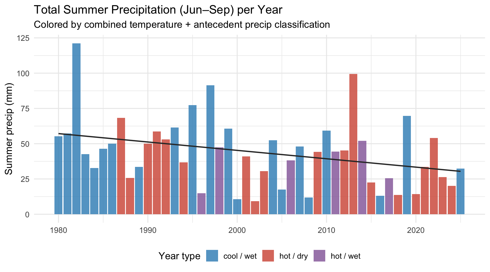

Code
library(tidyverse)
library(lubridate)
library(whychusModel)
library(here)
library(ggridges)GridMET daily tmax/tmin 1979–2025
Focus: June–September trends, variability, and year classification using k-means on mean summer tmax and extreme heat day count.
library(tidyverse)
library(lubridate)
library(whychusModel)
library(here)
library(ggridges)data("sisters_air_temp_historical")
data("sisters_precip_historical")
# Filter to June–September
summer <- sisters_air_temp_historical |>
mutate(
year = year(date),
month = month(date),
doy = yday(date)
) |>
filter(month %in% 6:9)annual <- summer |>
group_by(year) |>
summarise(
mean_tmax = mean(tmax_C, na.rm = TRUE),
sd_tmax = sd(tmax_C, na.rm = TRUE),
p90_tmax = quantile(tmax_C, 0.90, na.rm = TRUE),
p10_tmax = quantile(tmax_C, 0.10, na.rm = TRUE),
n_days_gt35 = sum(tmax_C > 35, na.rm = TRUE),
.groups = "drop"
)K-means (k = 3) on mean_tmax and n_days_gt35 (heat stress proxy).
Note: “dry” classification requires precipitation data; these labels reflect temperature only. Hot summers are often (but not always) dry summers.
set.seed(42)
km <- kmeans(scale(annual[, c("mean_tmax", "n_days_gt35")]), centers = 3)
# Label clusters by mean_tmax rank (highest = hot, lowest = cool)
cluster_means <- tapply(annual$mean_tmax, km$cluster, mean)
rank_order <- rank(cluster_means)
label_map <- setNames(
c("cool / avg", "warm", "hot")[rank_order],
names(rank_order)
)
annual <- annual |>
mutate(
cluster = as.character(km$cluster),
year_type = label_map[cluster]
)
year_colors <- c("cool / avg" = "#4393c3", "warm" = "#f4a582", "hot" = "#d6604d")ggplot(annual, aes(x = year, y = mean_tmax)) +
geom_point(aes(color = year_type), size = 2.5, alpha = 0.85) +
geom_smooth(method = "lm", color = "grey30", linewidth = 0.8, se = TRUE) +
scale_color_manual(values = year_colors, name = "Year type") +
labs(
title = "Sisters, OR — Summer (Jun–Sep) Mean Daily Maximum Temperature",
subtitle = "GridMET 1979–2025 | trend line = OLS",
x = NULL,
y = "Mean tmax (°C)"
) +
theme_minimal(base_size = 13) +
theme(legend.position = "bottom")`geom_smooth()` using formula = 'y ~ x'
ggplot(annual, aes(x = year, y = sd_tmax)) +
geom_point(aes(color = year_type), size = 2.5, alpha = 0.85) +
geom_smooth(method = "loess", span = 0.5, color = "grey30", linewidth = 0.8, se = TRUE) +
scale_color_manual(values = year_colors, name = "Year type") +
labs(
title = "Within-Summer Variability of Daily Tmax",
subtitle = "SD of daily tmax, Jun–Sep each year",
x = NULL,
y = "SD of tmax (°C)"
) +
theme_minimal(base_size = 13) +
theme(legend.position = "bottom")`geom_smooth()` using formula = 'y ~ x'
ggplot(annual, aes(x = year)) +
geom_ribbon(aes(ymin = p10_tmax, ymax = p90_tmax), fill = "steelblue", alpha = 0.25) +
geom_line(aes(y = mean_tmax), color = "steelblue4", linewidth = 0.8) +
geom_smooth(aes(y = p90_tmax), method = "lm", color = "#d6604d", linetype = "dashed",
linewidth = 0.7, se = FALSE) +
geom_smooth(aes(y = p10_tmax), method = "lm", color = "#4393c3", linetype = "dashed",
linewidth = 0.7, se = FALSE) +
labs(
title = "Spread of Summer Tmax Over Time",
subtitle = "Blue band = 10th–90th percentile; dashed lines = trends at each tail",
x = NULL,
y = "tmax (°C)"
) +
theme_minimal(base_size = 13)`geom_smooth()` using formula = 'y ~ x'
`geom_smooth()` using formula = 'y ~ x'
summer |>
left_join(annual |> select(year, year_type), by = "year") |>
ggplot(aes(x = tmax_C, y = factor(year), fill = year_type)) +
geom_density_ridges(scale = 1.8, alpha = 0.75, rel_min_height = 0.01,
bandwidth = 1.5) +
scale_fill_manual(values = year_colors, name = "Year type") +
scale_y_discrete(breaks = seq(1979, 2025, by = 5)) +
labs(
title = "Distribution of Summer Daily Tmax by Year",
subtitle = "Jun–Sep; years classified by k-means on mean tmax + extreme heat days",
x = "Daily tmax (°C)",
y = NULL
) +
theme_minimal(base_size = 12) +
theme(legend.position = "bottom")
ggplot(annual, aes(x = year, y = n_days_gt35)) +
geom_col(aes(fill = year_type), alpha = 0.85) +
geom_smooth(method = "lm", color = "grey20", linewidth = 0.8, se = FALSE) +
scale_fill_manual(values = year_colors, name = "Year type") +
labs(
title = "Number of Extreme Heat Days (tmax > 35°C) per Summer",
subtitle = "Jun–Sep",
x = NULL,
y = "Days with tmax > 35°C"
) +
theme_minimal(base_size = 13) +
theme(legend.position = "bottom")`geom_smooth()` using formula = 'y ~ x'
annual |>
group_by(year_type) |>
summarise(
n_years = n(),
years = paste(sort(year), collapse = ", "),
mean_tmax = round(mean(mean_tmax), 1),
.groups = "drop"
) |>
arrange(desc(mean_tmax)) |>
knitr::kable()| year_type | n_years | years | mean_tmax |
|---|---|---|---|
| hot | 12 | 1990, 1996, 1998, 2003, 2012, 2013, 2015, 2017, 2018, 2020, 2021, 2022 | 27.9 |
| warm | 23 | 1979, 1981, 1984, 1985, 1986, 1987, 1988, 1991, 1992, 1994, 2000, 2001, 2002, 2004, 2006, 2008, 2009, 2010, 2011, 2014, 2016, 2023, 2024 | 26.8 |
| cool / avg | 12 | 1980, 1982, 1983, 1989, 1993, 1995, 1997, 1999, 2005, 2007, 2019, 2025 | 25.4 |
Summer air temperature drives direct stream heating, but antecedent moisture (snowpack and soil water entering summer) governs baseflow and buffering capacity. This section joins the temperature-only annual summaries with two precip metrics derived from sisters_precip_historical:
K-means (k = 4) is run on scaled mean summer tmax and antecedent precip, yielding four year types: hot/dry, hot/wet, cool/dry, cool/wet.
precip_long <- sisters_precip_historical |>
mutate(
year = year(date),
month = month(date),
water_year = if_else(month >= 10L, year + 1L, year)
)
antecedent <- precip_long |>
filter(month %in% c(10:12, 1:5)) |>
group_by(water_year) |>
summarise(antecedent_precip_mm = sum(precip_mm, na.rm = TRUE), .groups = "drop") |>
rename(year = water_year)
summer_precip <- precip_long |>
filter(month %in% 6:9) |>
group_by(year) |>
summarise(summer_precip_mm = sum(precip_mm, na.rm = TRUE), .groups = "drop")
precip_annual <- left_join(antecedent, summer_precip, by = "year")
# Join with temperature summaries; drop 1979 (incomplete antecedent window)
annual2 <- annual |>
left_join(precip_annual, by = "year") |>
filter(year >= 1980)set.seed(42)
km2 <- kmeans(scale(annual2[, c("mean_tmax", "antecedent_precip_mm")]), centers = 4)
med_tmax <- median(annual2$mean_tmax)
med_precip <- median(annual2$antecedent_precip_mm)
centroids <- tibble(
cluster = as.character(1:4),
ct_tmax = as.numeric(tapply(annual2$mean_tmax, km2$cluster, mean)),
ct_precip = as.numeric(tapply(annual2$antecedent_precip_mm, km2$cluster, mean))
) |>
mutate(
year_type2 = paste0(
if_else(ct_tmax >= med_tmax, "hot", "cool"),
" / ",
if_else(ct_precip >= med_precip, "wet", "dry")
)
)
label_map2 <- setNames(centroids$year_type2, centroids$cluster)
annual2 <- annual2 |>
mutate(
cluster2 = as.character(km2$cluster),
year_type2 = label_map2[cluster2]
)
combo_colors <- c(
"hot / dry" = "#d6604d",
"hot / wet" = "#9970ab",
"cool / dry" = "#bf812d",
"cool / wet" = "#4393c3"
)ggplot(annual2, aes(x = antecedent_precip_mm, y = mean_tmax, color = year_type2)) +
geom_vline(xintercept = med_precip, linetype = "dashed", color = "grey60", linewidth = 0.5) +
geom_hline(yintercept = med_tmax, linetype = "dashed", color = "grey60", linewidth = 0.5) +
geom_point(size = 3, alpha = 0.85) +
ggrepel::geom_text_repel(aes(label = year), size = 3, max.overlaps = 15) +
scale_color_manual(values = combo_colors, name = "Year type") +
labs(
title = "Summer Temperature vs. Antecedent Precipitation",
subtitle = "Oct–May precip (mm) vs. Jun–Sep mean tmax (°C) | Sisters, OR 1980–2025",
x = "Antecedent precip Oct–May (mm)",
y = "Mean summer tmax (°C)"
) +
theme_minimal(base_size = 13) +
theme(legend.position = "bottom")
ggplot(annual2, aes(x = year, y = mean_tmax, color = year_type2)) +
geom_point(size = 2.5, alpha = 0.85) +
geom_segment(aes(xend = year, y = min(mean_tmax) - 0.2, yend = mean_tmax),
alpha = 0.25, linewidth = 0.4) +
scale_color_manual(values = combo_colors, name = "Year type") +
labs(
title = "Summer Mean Tmax Over Time — Combined Classification",
subtitle = "Year type from k-means on summer tmax + Oct–May antecedent precip",
x = NULL,
y = "Mean summer tmax (°C)"
) +
theme_minimal(base_size = 13) +
theme(legend.position = "bottom")
ggplot(annual2, aes(x = year, y = summer_precip_mm)) +
geom_col(aes(fill = year_type2), alpha = 0.85) +
geom_smooth(method = "lm", color = "grey20", linewidth = 0.8, se = FALSE) +
scale_fill_manual(values = combo_colors, name = "Year type") +
labs(
title = "Total Summer Precipitation (Jun–Sep) per Year",
subtitle = "Colored by combined temperature + antecedent precip classification",
x = NULL,
y = "Summer precip (mm)"
) +
theme_minimal(base_size = 13) +
theme(legend.position = "bottom")`geom_smooth()` using formula = 'y ~ x'
annual2 |>
group_by(year_type2) |>
summarise(
n_years = n(),
mean_tmax = round(mean(mean_tmax), 1),
antecedent_precip_mm = round(mean(antecedent_precip_mm), 0),
summer_precip_mm = round(mean(summer_precip_mm), 0),
years = paste(sort(year), collapse = ", "),
.groups = "drop"
) |>
arrange(desc(mean_tmax), antecedent_precip_mm) |>
knitr::kable(
col.names = c("Year type", "N", "Mean tmax (°C)",
"Antecedent precip (mm)", "Summer precip (mm)", "Years")
)| Year type | N | Mean tmax (°C) | Antecedent precip (mm) | Summer precip (mm) | Years |
|---|---|---|---|---|---|
| hot / dry | 19 | 27.5 | 239 | 39 | 1987, 1988, 1990, 1991, 1992, 1994, 2001, 2002, 2003, 2009, 2012, 2013, 2015, 2018, 2020, 2021, 2022, 2023, 2024 |
| hot / wet | 6 | 27.5 | 370 | 37 | 1996, 1998, 2006, 2011, 2014, 2017 |
| cool / wet | 21 | 25.8 | 340 | 50 | 1980, 1981, 1982, 1983, 1984, 1985, 1986, 1989, 1993, 1995, 1997, 1999, 2000, 2004, 2005, 2007, 2008, 2010, 2016, 2019, 2025 |